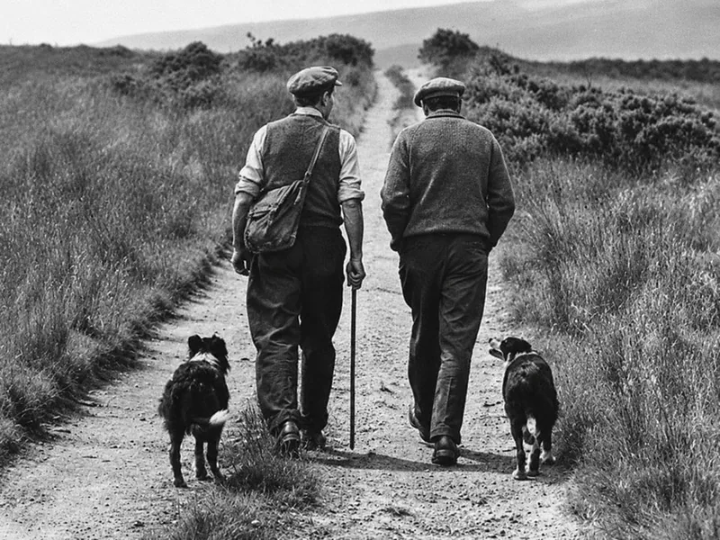
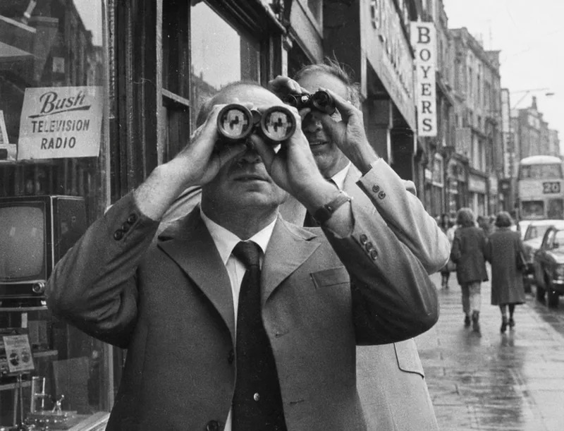
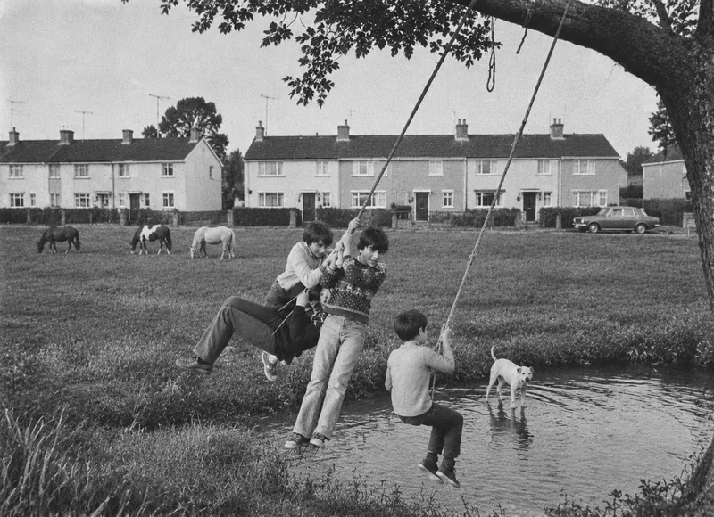

One-to-one Leadership coaching

A conversation worth having.
Leadership can be a demanding business. And however experienced you are, there aren't always many opportunities to step away from the day-to-day and talk openly about what's on your mind.
My one-to-one coaching offers that opportunity.
I work with experienced leaders and managers across business, education and organisations. People who bring years of experience, different perspectives and their own ideas about how things might be done.
We start with what's important to you. That might be a particular challenge at work, a difficult relationship, the pressure of responsibility or simply a sense that something could be working better.
From there,
we explore.
What might
we explore?
Sometimes…
It's about recognising strengths and abilities you're already using in other parts of your life and considering how they might apply at work.
It's about examining how you show up as a leader, the influence you have on others and the relationships that shape your organisation.
It's about questioning assumptions, looking beyond established practices and considering different ways of doing things.
It can also be a chance to reconnect with
what makes the work meaningful to you,
and where you want to put your energy.
There’s more than one way oflooking at things.

One of the things I've become increasingly interested in is self-awareness and emotional regulation. How we respond to situations, what influences our reactions and the assumptions we carry into conversations and decisions.
Leadership doesn't happen in isolation. The way we communicate, respond to challenges and work with others can have an influence well beyond what we might immediately recognise.
Sometimes, taking a little time to examine our own thinking can help us see a familiar situation quite differently.
We can also take our conversations outdoors, if that appeals to you, and see what a little time in nature brings to the thinking.
I’m not there to tell you how to lead.
My role is to …
Listen,
Ask questions,
Offer a different perspective and, where appropriate, challenge your thinking.
What comes out of those conversations will be different for everyone.
It might be greater clarity around a decision, a different approach to a team or a practical change in how you work.
The important part is what you choose to do with it.

And sometimes,it’s something else.
Not every coaching conversation
begins with a challenge at work.
Sometimes there's an idea you've been considering for years, a decision you've been putting off, or a growing sense that you might like to do things differently.
Perhaps you've told yourself you haven't the time, that now isn't the right moment, or that it's something you'll get around to eventually.
It may be worth taking a little time to question those assumptions.
Not necessarily to make a big change. But to consider what you actually want, rather than what you've always assumed you should be and what you should do.
A few questions
you might have.
What is one-to-one leadership coaching?
It’s an opportunity to step away from the day-to-day and talk through something that matters to you.
My role is to listen, ask questions and sometimes challenge how you’re looking at a situation. You bring your own experience, ideas and understanding of what’s happening.
Our conversations can help you recognise strengths you already have or find a different way of approaching things. What you choose to do with that is yours. The most important step is the first.
Tús maith leath na hoibre — A good start is half the work.
Do I need a particular challenge or goal to begin?
You don’t need to arrive with everything neatly worked out.
There might be a decision you’re weighing up, a difficult relationship or something you’d like to do differently. Things might be going well, but you’d value a little time to consider where you’re putting your energy.
We start with what’s on your mind. Often, what matters most becomes clearer as we talk.
How is coaching different from therapy?
My coaching focuses on what’s happening in your life and work, how you respond to it and the choices available to you. We might explore how you make decisions, the habits that shape your behaviour and the commitments you want to make.
That can involve personal experiences and feelings. You don’t leave the rest of your life at the door simply because we’re discussing leadership. But coaching is not therapy or a substitute for mental health treatment. If another kind of support would be more appropriate, I’ll discuss that with you and refer you to a suitable professional.
Changing behaviour takes time. There’s no rush.
Mol an lá um tráthnóna — Praise the day in the evening.
Is your approach evidence based?
Yes. Alongside my leadership experience, I draw on professional coaching training, my MSc in Positive Health Science and research into conscious and unconscious behaviour and how people work together.
We may look at the wider organisation and its relationships, then consider your part in that picture. What can you influence? What sits outside your control? What effect might you have on others?
I use the GROW model to help structure our conversations, exploring your goals, current situation, options and next steps. The research and frameworks inform my approach, while the conversation remains about you and your circumstances.
Is coaching confidential if my organisation is paying?
Yes. Your sessions are a confidential space. If your organisation is paying, we’ll agree together at the outset what, if anything, is shared with them. I’ll also explain the limits of confidentiality, including legal or safety concerns, and how I may discuss my work anonymously in confidential professional supervision.
How many sessions would I need, and where do they take place?
We’ll discuss the number of sessions when we first talk. My preference is for one-hour sessions, with your agreement.
We can meet online, at your workplace or at another agreed location. We’ll also talk about the approach that suits you and how you’d like us to work together.
Will I need to prepare or do work between sessions?
Come to your first session with an open mind. This is your time to pause and reflect. Take advantage of it.
Lig do scíth — Let yourself rest.
How will I know whether coaching is helping?
We’ll begin each session with a short review of the previous conversation and what has happened since.
At the end, you’ll receive a personal, confidential report reviewing the coaching process, the goals you’ve set and the commitments you’ve made. We’ll also identify an accountability partner: someone who can support you in following through.
How much does one-to-one coaching cost?
Our first conversation is complimentary, with no obligation to go further. It’s a chance to talk about what you’re looking for and whether working together feels right.
If you’d like to continue, we’ll discuss fees and how the sessions will be arranged.